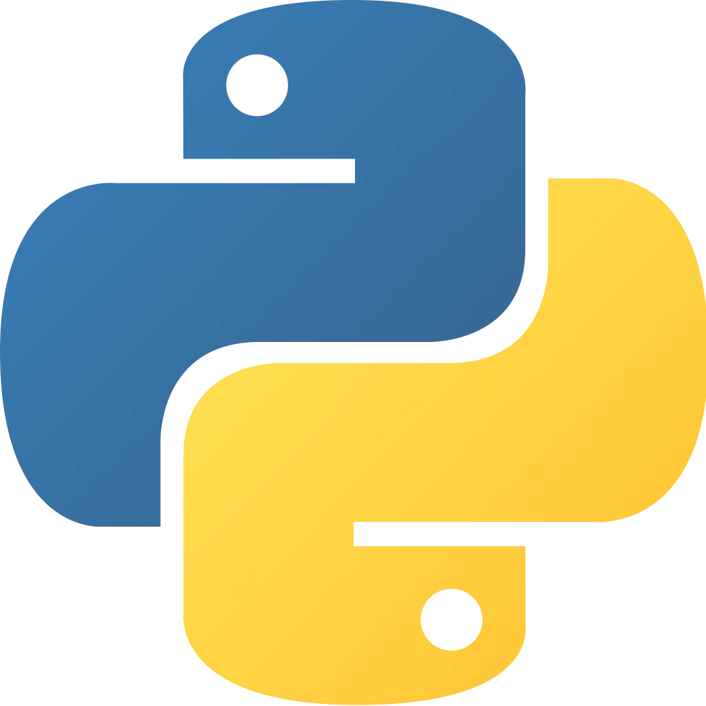
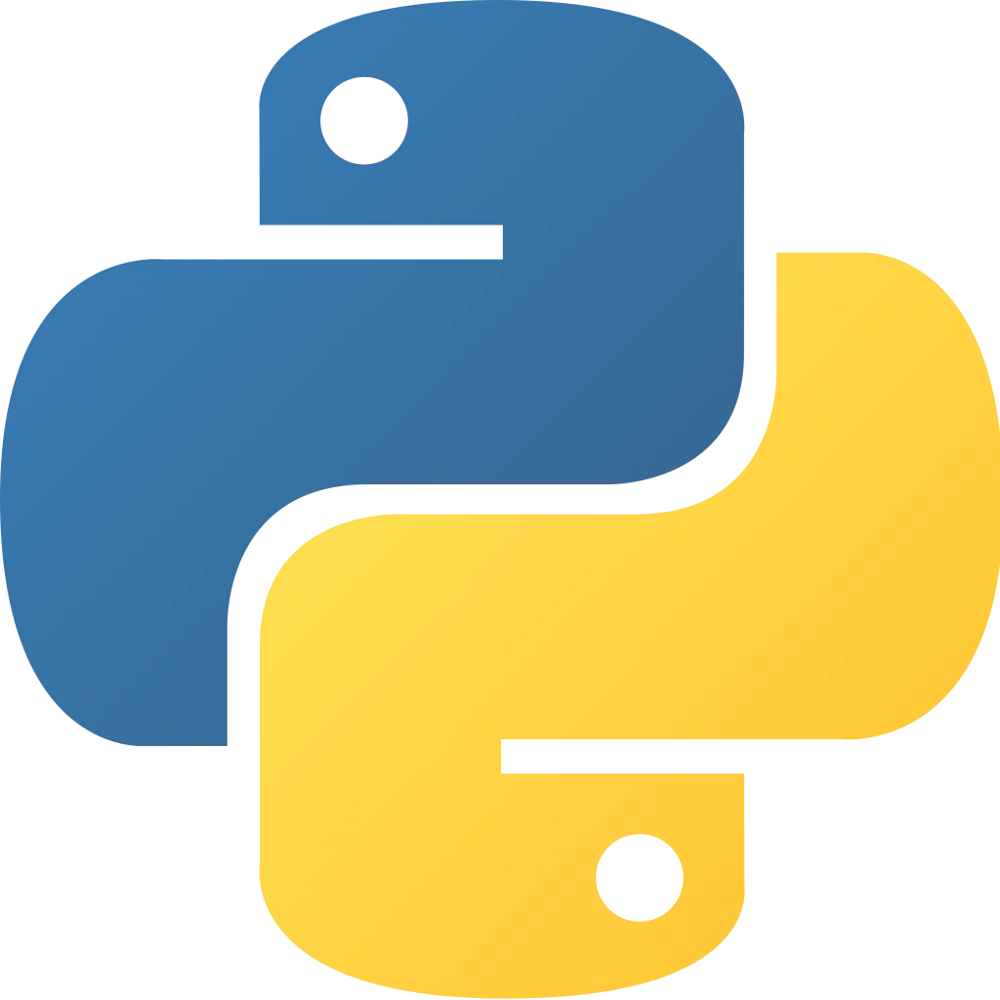
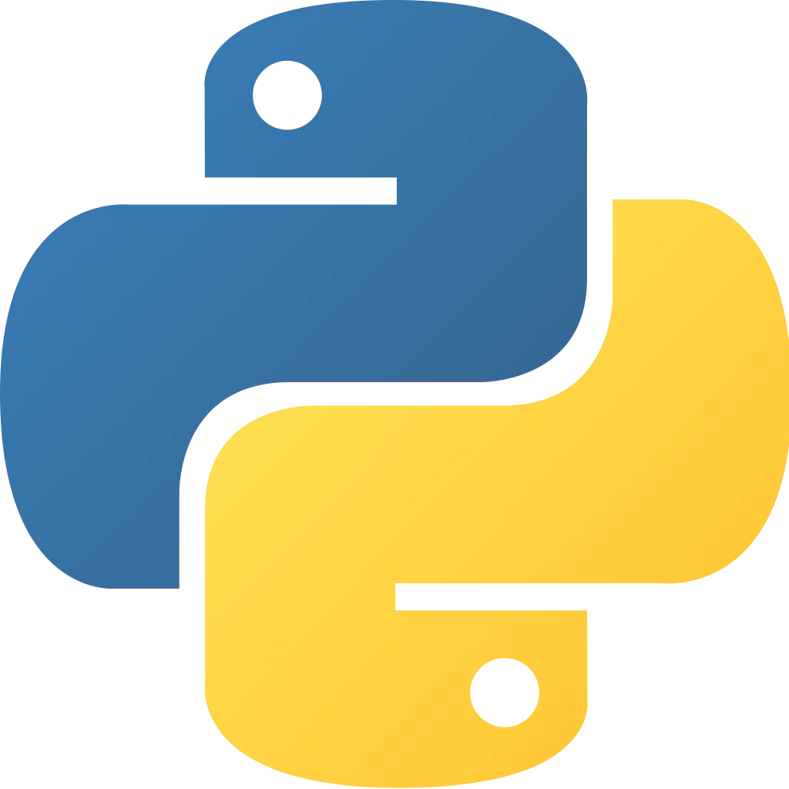

Skills
Programming Languages
 


Web Development

I am a Junior at John Jay College. Here you can find more about my work and projects.
My journey into computer science began when I was young, building and coding my first Lego EV3 Robot from scratch. The thrill of bringing my creations to life sparked a passion in me. I wanted to continue building programs that are not only fun for users but also innovative and helpful.
Through my experience in marketing, I’ve developed a keen understanding of user needs, attention to detail, and adaptability. These skills, combined with my self-motivation and drive for continuous improvement, have shaped me into a dedicated and versatile individual. My deep understanding of data structures and algorithms fuels my passion for tackling challenges and advancing in software development.
As a first-generation college student, I've navigated college and the diverse tech field independently. To gain diverse perspectives, I actively participated in clubs on campus and took initiative by enrolling in courses to enhance my technical abilities. I see my career as a journey to acquire new skills and knowledge, I am eager to explore opportunities that make a positive impact and create a more inclusive environment for underrepresented individuals in the tech industry.
